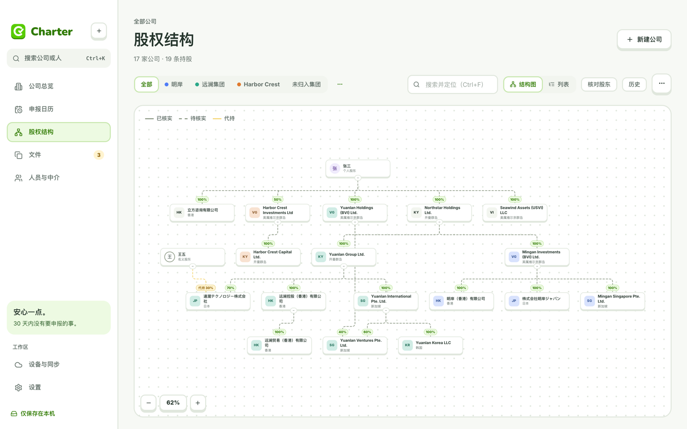
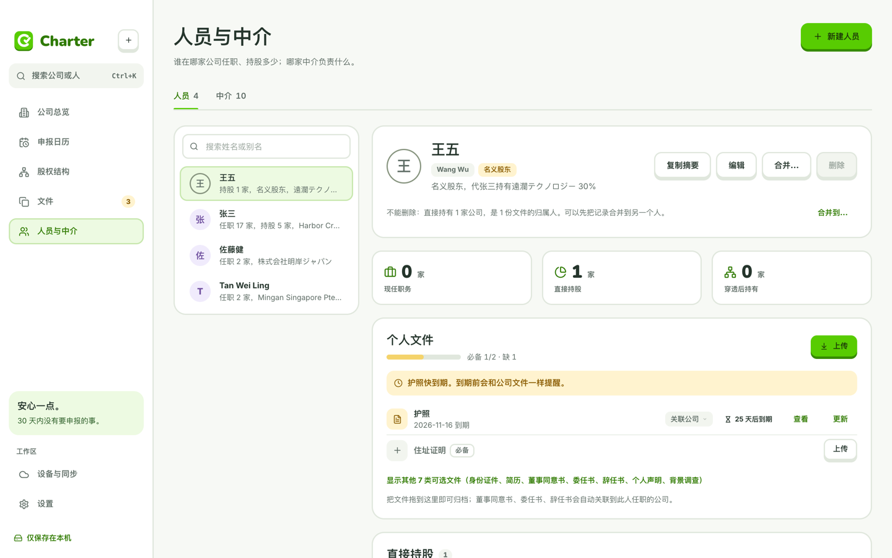

打开旧记录
数据文件夹格式延续，5.0、5.1 和 4.x 记录可直接打开。
结构、到期、档案、文件与人员，在同一个本地工作区里。
探索工作区
公司资料、持股、任职与依据文件放在一起。顺着任何一条记录，都能继续找到相关信息。

Charter 不需要账户，也不依赖自有云服务。数据使用普通文件夹，可放在本机磁盘，也可继续使用现有同步盘。
数据文件夹格式延续，5.0、5.1 和 4.x 记录可直接打开。
不需要导入到 Charter 账户或新的在线空间，外部改动会自动刷新。
两个平台打开同一份数据；升级前仍建议备份整个文件夹。
文件整理、到期提醒和申报清单更完整，水印与材料包预览也更顺手。
按归属筛选和展开文件；拖入后显示逐份结果，并新增 XLSX 内容识别。
提醒时间可以直接输入，申报日历可导出 PDF、CSV 和日历订阅文件。
统一翻页和水印标签排序，改善缺件提示、长名称排版和多页材料清单。
5.5.9 支持 macOS 13 及以上，提供 Apple 芯片版、Intel 版，以及 Windows x64 安装版和免安装版。应用没有使用商业代码签名证书。
下载 macOS 版macOS 首次打开时，请在访达中右键 Charter 并选择「打开」；Windows 请选择「更多信息」后继续运行。